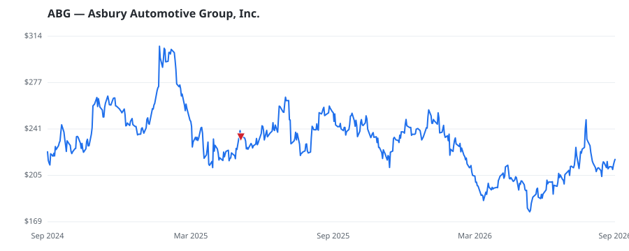

bullish · bearish · n/a — dots: price>SMA10 · SMA10>SMA50 · SMA50>SMA200 · up>down volume (20d)
Retailing · mid cap

Asbury Automotive Group is a regional collection of automobile dealerships that went public in March 2002. The company operates 158 new-vehicle stores and 37 collision centers. Over 70% of new-vehicle revenue is from luxury and import brands. Asbury also offers third-party financing and insurance products and its own F&I products via Total Care Auto. Asbury operates in 14 states (mostly in Rocky Mountain states, Texas, the Northeast, and Southeast). Asbury store brands include Herb Chambers in the Northeast, McDavid and Park Place in Texas, Koons in the Washington, D.C. area, and the Larry H. RETAIL-AUTO DEALERS & GASOLINE STATIONS · website
| Revenue | $18.0B | Net income | $492.0M |
|---|---|---|---|
| Operating income | $860.6M | Diluted EPS | $25.13 |
| Assets | $11.6B | Equity | $3.9B |
| Fund | Fund alpha vs SPY | Position | % of book |
|---|---|---|---|
| ROBOTTI ROBERT | +19% | $18M | 2.8% |
| MOON CAPITAL MANAGEMENT LP | +33% | $1M | 0.7% |
| OAK ASSOCIATES LTD /OH/ | +10% | $0M | 0.0% |
Hedge data: SEC EDGAR 13F · ranked funds beat SPY in >50% of their quarters · fund alpha = mirror-portfolio return minus SPY.